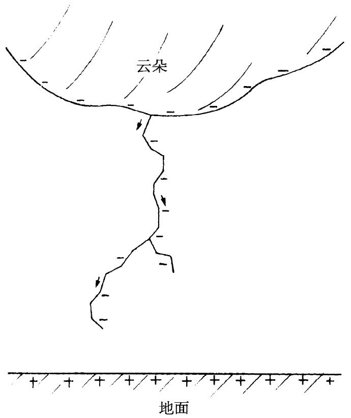
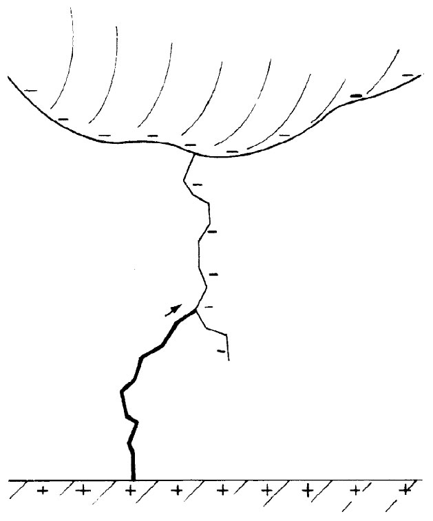

作为闪电中所发生情况的证据的第一张照片是这样获得的，快门打开着的一部照相机由人们提着前后移动——同时指向闪电所预期发生的地方。用这种办法获得的早期照片清楚地表明，闪电往往是由沿相同路线的一连串放电构成的。后来，一种安装在一个迅速旋转着的盘上的、配有分开180°的双镜头“博伊斯”（Boys）牌照相机问世了。由每一镜头所形成的像横越胶片移动——图像按时间被展开。比方，若闪电重复着，就会有并排着的两个像。通过对由这两个镜头所形成的像做比较，人们就有可能计算出有关闪光发生的时间序列的细节。图9-14表示由“博伊斯”牌照相机拍摄的一张照片。
图9-14 由一部“博伊斯”牌照相机所拍得的一张闪电照片［转载自Schonland，Malan and Collens，Proc. Roy. Soc. London ，1935，152］
现在我们要来描写闪电。另外，对它的动作仍未确切理解。仅将对它的外表形象 给予定性描述，但对于它为什么 会这样表现则不做详细谈论。我们将仅仅描述在平坦旷野上面云底带有负电荷的那种普通情况。这朵云的负电势比起下面的地球的负电势来还要低得多，因而带负电荷的电子将被加速而奔向地面。发生的情况如下。全都从一种所谓“梯式指引线”开始，这并没有像闪电那么光亮。在照片上人们可以看到，初时一小点亮斑会从云朵那里开始出现，随即迅速地向下移动——以六分之一的光速进行！它只跑过50m左右便停下来。约歇息50μs之后，重又开始另一步。再歇息一会就又跨出第三步，如此等等。通过一连串阶梯而向地面运动，沿着像图9-15所示的路线。在这条指引线里有来自云朵的负电荷，整根柱里充满着负电荷。并且，空气被那些产生该指引线的迅速运动的电荷所电离，因而沿电荷走过的这条路线空气已变成导体。在指引线接触到地面的那一瞬间，便有向上直通云朵的充满着负电荷的一根“导线”。现在，云里的负电荷能够最后干脆逃脱了出来。处在指引线底部的那些电子最早体会到这一点，它们倾倒了出来，剩下正电荷在后头，那又再从指引线的较高处吸引着更多的负电荷，而这又再倾倒下来，如此等等。所以最后一部分云朵里的全部负电荷将沿着这根柱以迅速而有力的方式奔跑出来。因此你所见到 的闪电乃是从地面跑上去 的，如图9-16所示。实际上，这一主要闪电——是其中最明亮的部分——称为回路闪电 。这就是能够产生十分明亮的光的那种东西，而其热量使空气迅速膨胀从而发生霹雳一声雷响。
|  |  |
| 图9-15 “梯式指引线”的形成 | 图9-16 回路闪电沿着指引线所开辟的道路回头跑上去 |
在一次闪电中，电流的峰值达到约10000A，由它带下来的电荷约为20C。
但至此事态仍未结束。可能在大约百分之几秒后，当这个回路闪电消失时，另一条梯式指引线又冲了下来。但这一次中间不再歇息。它被称为“飞标引线”，一直奔跑下来——一下子就从顶到底。它全力完全沿着旧路前进，因为那里还有足够多的余烬使它成为一条最易通得过的路径。这一条新的指引线又再充满着负电荷。当它接触到地面的一刻——咝的一声！——沿着该路径就有一个回路闪电一直往上冲击。所以你会看到闪电一再发生。有时仅闪击一两次，有时五或十次——有一次在同一条路线上竟有多达42次的闪电被看到——但总是迅速地相继发生的。
有时事情甚至变得更加复杂。例如，在其中一次歇息之后，该指引线可能通过送出两 个阶梯——都是朝下指向地面的，但在不同的角度上——而发展成一种分支，如图9-15。此后会发生什么情况，将取决于其中是否有一条支肯定更早地到达地面。如果真的是这样，则那明亮的（把负电荷倾卸到地面上的）回路闪电便会沿这条直达地面的支路往上 冲，而在其通往云朵的路程中经过该分叉点时，就有一条明亮的闪电沿另一条支路往下 跑。为什么？因为负电荷正在倾倒而下，而这便点燃了闪电。这电荷开始在那个次级分支的顶端运动，把该支路中那些较长的相继部分排空，因而该明亮闪电便显示出是在沿该支路奔跑下来，同时闪电也朝着云朵伸展上去。然而，倘若这些额外的指引线支路有一条恰巧几乎同时与那原来的指引线到达地面，则有时恰巧可能那第二次闪电的飞标 指引线沿着这第二条支路。于是，我们便见到第一次主闪光发生在一处，而第二次闪光则发生在另一处。它是从原来概念衍生来的。
再者，对于十分靠近地面的区域，我们上面的描述就过于简化了。当该梯式指引线离地面100m内时，有证据表明从地面发生了放电来迎接它。大概电场已变强至足以使一刷形放电产生。例如，设有一尖锐物体，诸如有尖顶的一座建筑物，那么当指引线落下至该屋顶附近时，电场是那么强大以致放电从尖端开始而向上达到该指引线。闪电倾向于打击这样的一点。
显然久已明白，高耸的东西常受雷击。波斯王哲息斯（Xerxes）的顾问阿塔班尼斯（Artabanis）曾有一句名言，那是当哲息斯企图把整个已知世界都归由波斯人管辖而出征时，他给予他的主子关于对希腊的一次预谋攻击的忠告。阿塔班尼斯说：“看上帝怎样利用他的闪电来毁灭那些大野兽，他不能容忍它们逐渐变傲慢，而那些小动物却从未惹怒过他。同样，他又如何使他的闪电总是落在高屋和高树上。”然后，他才解释理由：“因此，十分明白，他喜欢把任何灾难都降落在那些自高自大的东西上面”。
你是否会认为——现在你已经懂得了闪电总要打击高大树木的真正原因——比2400年前的阿塔班尼斯对国王有关军事上的忠告更加明智？不要自高自大，你做起来只会比他更缺乏诗意。
[1] 这里按原文是“没有那么陡”，似乎有误，所以我们把它改了。——译者注
[2] 一种方便的用以观察水滴大小的办法是，让水流落在一大块金属薄板上，较大的水滴会造成较响的声音。